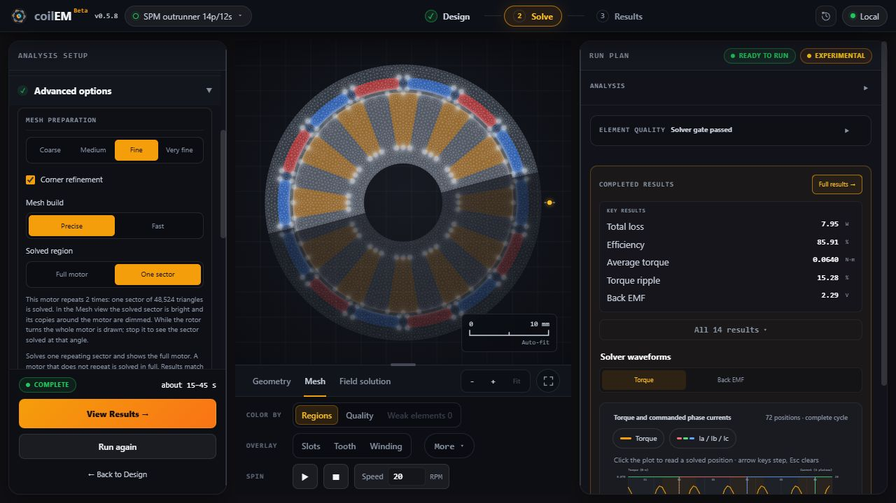
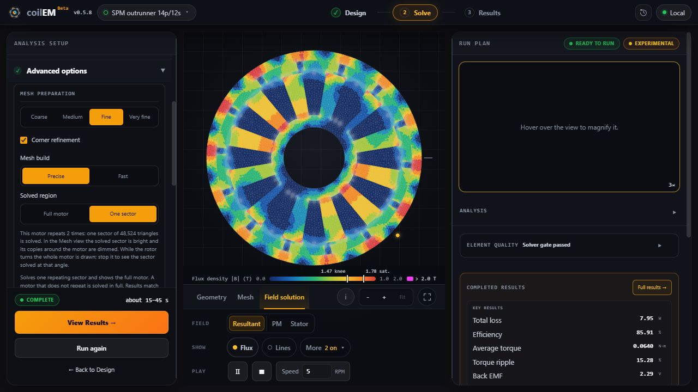

Completed with Python test failures. Both numerical A-F lanes and all sector, Rust, Prius, frontend, and app checks passed. The full Python run includes the documented qualification outcomes and the additional Windows executable-lookup issue described below.
Windows 11 Home build 26200, AMD Ryzen 7 7700, 64 GB RAM, AC power. Exact commit: 52f19004982887a7d615bbb8ea3b5a69bdfcacf7.
Sector tests: 81 passed. Rust tests: 283 passed. Frontend build and contracts: passed.
Full Python suite: 2660 passed, 25 failed, 9 errors, 3 skipped. Includes the 16 documented qualification outcomes and 18 additional Windows process-lookup outcomes. All 40 follow-up tests passed in isolation. Complete tracebacks are in the full-suite log.
A-F full: PASS_WITH_UNSUPPORTED {'PASS': 68, 'UNSUPPORTED': 1}; sector: PASS_WITH_UNSUPPORTED {'PASS': 68, 'UNSUPPORTED': 1}. Status differences: 0. Sector fallbacks: 0.
Full lane 33.30 minutes; sector lane 17.03 minutes. Observed back-to-back wall times, with other work on the machine.
Full motor against the published Windows 0.5.8 record at 78e6f4fc8aa8: 69/69 case comparisons match, including gate outcomes. Suite and reference-bundle hashes are unchanged. Detailed 0.5.8 comparison.
| Sector versus full | Cases | Maximum absolute difference | Case |
|---|---|---|---|
| loaded_mean_torque | 52 | 3.253050 % | spm_12p36s_distributed_femm_validation |
| back_emf_fundamental | 53 | 0.105039 % | ipm_vshape_8p12s_narrow_angle_contract |
| iron_loss | 29 | 0.883371 % | spm_4p12s_simple_noload__baseline |
| yoke_iron_loss | 29 | 3.217169 % | spm_outer_10p12s_single_layer__baseline |
| efficiency | 25 | 0.056242 percentage points | spm_8p12s_concentrated__dq_I20_g60 |
| lambda_d_Wb | 12 | 0.005238 % | ipm_flat_8p12s_fsae_contract__dq_I100_g60 |
| lambda_q_Wb | 12 | 0.007061 % | spm_8p12s_concentrated__dq_I20_g60 |
| cogging_peak_to_peak | 12 | 5.275033 % | spm_8p12s_example_shoed__cogging |
| cogging_fundamental | 12 | 3.608904 % | ipm_flat_24s16p_industrial_contract__cogging |
Loaded mean torque: 44 cases within 0.5%, 5 more within 1%, and 3 distributed-winding cases above 1% (12p36s +3.253%, 8p48s chorded +1.640%, 8p48s +1.546%). Both full and sector versions pass the frozen FEMM gates.
Prius: 10/10 software checks passed. Tutorial RMS difference -0.061716%. Loaded preset difference -0.268580% from retained FEMM.
All 17 Prius jobs solved as 1/8 sectors. Maximum difference across the 13 curve torques against the published Windows 0.5.8 full-motor run: 0.118544 N·m.
App checks passed: tooth-centre stator repetition, stopped sector highlighting, whole-motor Spin, restored highlighting after pausing, and full-motor field/playback without a visible seam.
Full results JSON · Case-by-case CSV · Full lane summary · Sector lane summary · Prius report · Gmsh lookup reproduction

